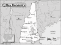

New Hampshire

Attention: If you use this or any of the AIRS lists in any state, please report any bad phone numbers or emails to the webmaster. This is the responsibility of all users, including you. Thank you!
Jon-reed Hathaway
EMAIL: jon_dot_hathaway_at_verizon_dot_net
CROSSROADS: NH Rte# 101A & 122
CITY: Amherst
ZIP CODE: 03031
PHONE: (603) 673-1302
VW'S: '87 Syncro GL, '86 GL w/sunroof, '66 pop-top Westy
COMMENTS: Currently into late model Vanagons, have a Barn full of Baywindow and
Vanagon parts. NH area rep for LiMBO, member of Full Moon Bus Club.
Don't hesitate to call if in the area...
AVAILABLE: Weekdays 8am-9pm, Anytime for emergencies
I am familiar with: fuel injection, type4 engine, wasserboxer
I CAN PROVIDE THE FOLLOWING SERVICES:
INTERNET ACCESS
TOOLS
TELEPHONE ACCESS
MECHANICAL HELP
SPACE TO WORK ON BUS
SOME PARTS
COFFEE/TALK
CAMPING: 2 nights
SPARE ROOM: none
Favorite beer type: I don't drink
Jeff Tickner
(tickners@webryders.com)
CROSSROADS: Rte 101,9,10,12
Marlow, 03456
PHONE: 603-446-7322
VW'S: 66 Van, 76 Bug, 78 Camper, 93 Eurovan
COMMENTS: I'm pretty good with AFC injection and have spare parts
AVAILABLE: Evenings and Weekends
familiar with: 1600, fuel injection, type4 engine
I CAN PROVIDE THE FOLLOWING SERVICES:
INTERNET ACCESS
TOOLS
TELEPHONE ACCESS
TRANSPORTATION HELP
MECHANICAL HELP
PARTS AVAILABLE
COFFEE/TALK
CAMPING SPOT: MOVE IN!!! :)
Favorite beer type: Micro brands
RYAN MULLETT
(LOVEMYBUS@aol.com)
KEENE, 03431
PHONE: 1 603 358 6905
ONLY CALL IF EMERGENCY
VW'S: BUS 79
AVAILABLE: WEEKENDS
I CAN PROVIDE THE FOLLOWING SERVICES:
INTERNET ACCESS
TOOLS
TELEPHONE ACCESS
TRANSPORTATION HELP
MECHANICAL HELP
COFFEE/TALK
SPARE ROOM: 4 nights or more
Favorite beer type: Micro brands
Ned Savoie
(ned@harbourlight.com)
CROSSROADS: I-95 and NH4/16
portsmouth, 03801
PHONE: 603.427.2821
VW'S: 78 Westy, 73 Bus, 67 Westy (Planter)
COMMENTS: Also try my cell phone, 603.498.6233
AVAILABLE: anytime
familiar with: 1776+, fuel injection, type4 engine
I CAN PROVIDE THE FOLLOWING SERVICES:
INTERNET ACCESS
TOOLS
TELEPHONE ACCESS
TRANSPORTATION HELP
MECHANICAL HELP
SPACE TO WORK ON BUS
STORAGE SPACE
PARTS AVAILABLE
COFFEE/TALK
SPARE ROOM
CAMPING SPOT: 3 nights
Favorite beer type: Anything cold
Erik
(stim8d@aol.com)
CROSSROADS: I-93 101
Nashua
PHONE: 603-674-7677
VW'S: 71 campmobile 87 vanagon
COMMENTS: Not a mechanic, but able to figure out Idiot's guide. big driveway to fix
bus, yard to pitch tent, shower if you begin to stink too bad.....minor tools, but parts
stores down the street......moving to Oregon in June
AVAILABLE: 24-7
familiar with: 1600
I CAN PROVIDE THE FOLLOWING SERVICES:
INTERNET ACCESS
TOOLS
TELEPHONE ACCESS
TRANSPORTATION HELP
MECHANICAL HELP
SPACE TO WORK ON BUS
COFFEE/TALK
CAMPING SPOT: 2 nights
Favorite beer type: Non Alcoholic
Mark Ryan
EMAIL: busdrivers_at_tds_dot_net
CROSSROADS: I-89 and Rt. 11
CITY: New London
ZIP CODE: 03257
PHONE: 603-526-8812
ONLY CALL IF EMERGENCY
VW'S: None at present
AVAILABLE: 7AM-9PM
I am familiar with: 1600
I CAN PROVIDE THE FOLLOWING SERVICES:
INTERNET ACCESS
TOOLS
TELEPHONE ACCESS
TRANSPORTATION HELP
MECHANICAL HELP
SPACE TO WORK ON BUS
CAMPING: 1 night
SPARE ROOM: none
Favorite beer type: Anything cold
Keith Martin
(WhitStar@bit-net.com)
CROSSROADS: Route 114 about 5 miles north of I-293/101
Goffstown, 03045
PHONE: 603-497-3633
VW'S: 1978 Bus, 1973 Beetle
COMMENTS: I'm no machanic, but i have the idiot's book (and i can understand it), have
tools and quite a few parts, so i may be able to help.
AVAILABLE: schedule changes week to week, but usually mon-fri after 6 pm, anytime
weekends.
familiar with: 1500, 1600
I CAN PROVIDE THE FOLLOWING SERVICES:
INTERNET ACCESS
TOOLS
TELEPHONE ACCESS
TRANSPORTATION HELP
MECHANICAL HELP
SPACE TO WORK ON BUS
PARTS AVAILABLE
COFFEE/TALK
CAMPING SPOT: 4 nights or more
SPARE ROOM: 2 nights
Favorite beer type: Light and Airy
Don
(badassbus@hotmail.com)
CROSSROADS: RTE 16
Berlin, 03570
PHONE: (603)752-2707
VW'S: 1982 DIESEL VANAGON WESFALIA
AVAILABLE: Anytime
I CAN PROVIDE THE FOLLOWING SERVICES:
INTERNET ACCESS
TOOLS
TELEPHONE ACCESS
TRANSPORTATION HELP
MECHANICAL HELP
SPACE TO WORK ON BUS
STORAGE SPACE
PARTS AVAILABLE
COFFEE/TALK
CAMPING SPOT: 2 nights
Favorite beer type: Anything cold
Tom Barker
CROSSROADS: Rte.3 & Rte.106
EMAIL: barkers@alumni.unh.edu
CITY: Laconia, 03246
PHONE: 603-528-8560
VW'S: 1979 Sunroof Kombi
COMMENTS: "Bertha" is my third Baywindow and I also once owned a '67 Squareback,
Learned how to drive in the family Bug. Love aircooled VWs. I have some mechanical
ability, but am baffled by fuel injection.
AVAILABLE: Mon-Fri after 5pm or weekends
I am familiar with: 1600, 1776+
I CAN PROVIDE THE FOLLOWING SERVICES
INTERNET ACCESS
TOOLS
TELEPHONE ACCESS
TRANSPORTATION HELP
MECHANICAL HELP
SPACE TO WORK ON BUS
COFFEE/TALK
CAMPING: 2 nights
SPARE ROOM: none
Favorite beer type: Micro brands
Jay Brown
EMAIL: badkarma_at_ttlc_dot_net
CROSSROADS: Rt. 108; Rt. 101
CITY: Newmarket, 03857
PHONE: 603.659.3637
VW'S: '72 Riviera; '85 Westfalia GL
AVAILABLE: Call or email, if I am home, I will try to help.
I am familiar with: fuel injection, wasserboxer
I CAN PROVIDE THE FOLLOWING SERVICES
INTERNET ACCESS
TOOLS
TELEPHONE ACCESS
TRANSPORTATION HELP
MECHANICAL HELP
SPACE TO WORK ON BUS
SOME PARTS
COFFEE/TALK
CAMPING: 1 night
SPARE ROOM: 1 night
Favorite beer type: Micro brands
Dave & Diane Burden
EMAIL: dburden_at_mindspring_dot_com
CROSSROADS:I-91 (VT) exit 8, I-89 (NH) exit 12, Rts 10, 11, 12, 12A & 120.
CITY: Claremont, 03743
PHONE:(603-543-0106)
VW'S: 1972 Bus (Weekened conversion)
COMMENTS: We've had a variety of water and air cooled VWs in the past.
Familiar with basic repairs and some fairly major ones too based on some long
road trips...
AVAILABLE: Most weekends and after 7pm during the week.
I am familiar with: 1600, type4 engine, diesel
I CAN PROVIDE THE FOLLOWING SERVICES:
TOOLS
TELEPHONE ACCESS
MECHANICAL HELP
SPACE TO WORK ON BUS
COFFEE/TALK
CAMPING: 1 night
SPARE ROOM: none
Favorite beer type: I don't drink
vosvos
EMAIL: nyhattok_at_yahoo_dot_com
CROSSROADS: I-93 Exit 23/ Rt.104
CITY: Meredith,NH
ZIP CODE: 03253
PHONE: 603-279-8093
ONLY CALL IF EMERGENCY
VW'S: 79 Type2
COMMENTS: I'll be glad to help in an emergency. I work in a garage have access
to various tools. Just call and mention my name Nihat (pronounced 'nee-hut') to
my boss on the phone.
AVAILABLE: Mon-Fri 9-5
I CAN PROVIDE THE FOLLOWING SERVICES:
TOOLS
TELEPHONE ACCESS
TRANSPORTATION HELP
MECHANICAL HELP
CAMPING: 1 night
SPARE ROOM: none
Favorite beer type: I don't drink
Stan
EMAIL: ketchsr_at_msn_dot_com
CROSSROADS: Rt 95 and 33
CITY: Portsmouth
ZIP CODE: 03801
PHONE: 6033801190
VW'S: 1976 Bus
COMMENTS: Just started rebuilding my bus...... Brakes bearings CV joints etc.
Learning fast.
AVAILABLE: Evenings and weekends
I am familiar with: fuel injection
I CAN PROVIDE THE FOLLOWING SERVICES
INTERNET ACCESS
TOOLS
TELEPHONE ACCESS
SOME PARTS
COFFEE/TALK
Favorite beer type: I don't drink
Thom / trickythom
EMAIL: thom_at_trickythom_dot_com
CROSSROADS: Rt 3 / 111 / 101
CITY: Nashua
ZIP CODE: 03060
PHONE: 603 345 3668
VW'S: 77 riviera
COMMENTS: Just getting into it again, so my mechanical ability is coming back
slowly. Feel free to contact me if you are in the area and want to talk.
AVAILABLE: anytime (within reason)
I am familiar with: fuel injection, type4 engine
I CAN PROVIDE THE FOLLOWING SERVICES
INTERNET ACCESS
TELEPHONE ACCESS
TRANSPORTATION HELP
MECHANICAL HELP
COFFEE/TALK
CAMPING: none
SPARE ROOM: none
Favorite beer type: Anything cold
Alex Livingstone
EMAIL: a_livingstone_at_barbershop_dot_net
CROSSROADS: I-93 and Route 127
CITY: Sanbornton
ZIP CODE: 03269
PHONE: 603-387-7873
VW'S: 1976 Bus
AVAILABLE: Variable
I am familiar with: fuel injection, type4 engine
I CAN PROVIDE THE FOLLOWING SERVICES
INTERNET ACCESS
TOOLS
TELEPHONE ACCESS
TRANSPORTATION HELP
MECHANICAL HELP
SPACE TO WORK ON BUS
COFFEE/TALK
CAMPING: none
SPARE ROOM: none
Favorite beer type: I don't drink
Dan
EMAIL: MarketingGuru4U_at_hotmail_dot_com
CROSSROADS: Elm St / Granite St
CITY: Manchester
ZIP CODE: 03101
PHONE: 603 361-3358
VW'S: 1968 Bus
COMMENTS: Custom '68
1600cc Duel port, single carb
shaved door handles, tinted windows, custom one tone paint, chromed bumpers, ect..
A MUST SEE!
AVAILABLE: e-mail
I am familiar with: 1500, 1600, 1776+
I CAN PROVIDE THE FOLLOWING SERVICES
MECHANICAL HELP
SOME PARTS
COFFEE/TALK
CAMPING: none
SPARE ROOM: none
Favorite beer type: Micro brands
Simon Santiago
EMAIL: simonsantiago_at_yahoo_dot_com
CROSSROADS: 3N/101A/101
CITY: Amherst,
ZIP CODE: 03031
PHONE: 603 401 8366
VW'S: 1965 Double Cab pickup, 1972 Westy, 1976 Westy
COMMENTS: I'm just getting into classic VWs and auto mechanics in general.
Looking to restore my 1965 double cab first. Any one have engines, trannys,
lights, sheetmetal, chrome trim/misc parts that would be compatible? I
might even sell/trade my Westys for the right parts/assistance/labor. Will
start "Stage I" body work soon.
AVAILABLE: Phone 10am-11pm any day. Meet up Fri/Sat nights, all day
Sundays.
I CAN PROVIDE THE FOLLOWING SERVICES
INTERNET ACCESS
TOOLS
TELEPHONE ACCESS
TRANSPORTATION HELP
SOME PARTS
COFFEE/TALK
CAMPING: 3 nights
SPARE ROOM: 1 night
Favorite beer type: Micro brands
Terry
EMAIL: mathrocks_at_tds_dot_net
CROSSROADS: Route 101 and Route 31
CITY: Lyndeborough
ZIP CODE: 03082
PHONE: 603-654-3116
ONLY CALL IF EMERGENCY
VW'S: 1980 Vanagon Riviera
COMMENTS: We are new to VW's but will help in any way. We have the Bentley
for the 1970's and 1980's VW's (as well as Muir's book).
AVAILABLE: Mon-Fri evenings and Weekends
I CAN PROVIDE THE FOLLOWING SERVICES
INTERNET ACCESS
TOOLS
TELEPHONE ACCESS
TRANSPORTATION HELP
MECHANICAL HELP
SPACE TO WORK ON BUS
SOME PARTS
CAMPING: 4 nights or more
SPARE ROOM: 1 night
Favorite beer type: Thick and chewy
Frank W.
EMAIL: wheatonf_at_aol_dot_com
CROSSROADS: rt 93 in rt 104
CITY: Bristol
ZIP CODE: 03241
PHONE: 6037448667
VW'S: 1970 westy
COMMENTS: owner of same westy for over 30 years
AVAILABLE: open
I am familiar with: 1600
I CAN PROVIDE THE FOLLOWING SERVICES
INTERNET ACCESS
TOOLS
TELEPHONE ACCESS
TRANSPORTATION HELP
COFFEE/TALK
Favorite beer type: Anything cold
Don
EMAIL: XXVIRTUALINSANITYXX_at_yahoo_dot_com
CROSSROADS: nh rt 107=4
CITY: pittsfield, 03263
PHONE: 603 608-2500
VW'S: 1973 Riviera camper/1983 westy camper
COMMENTS: not a professional mechanic just an interested hobbyist
I am familiar with: 1776+, wasserboxer
I CAN PROVIDE THE FOLLOWING SERVICES
INTERNET ACCESS
TOOLS
TELEPHONE ACCESS
TRANSPORTATION HELP
MECHANICAL HELP
SPACE TO WORK ON BUS
STORAGE SPACE
SOME PARTS/CAN GET THEM
COFFEE/TALK
CAMPING: 4 nights or more SPARE ROOM: CALL ME/IT DEPENDS
Favorite beer type: Commercial brands
Dave
EMAIL: dmorley3_at_hotmail_dot_com
CROSSROADS: 101 and 122
CITY: Amherst, 03031
PHONE: 603-203-8090
VW'S: '72 Westy 1700
AVAILABLE: After 5PM, weekends
I am familiar with: 1776+, type4 engine
I CAN PROVIDE THE FOLLOWING SERVICES
INTERNET ACCESS
TOOLS
TELEPHONE ACCESS
TRANSPORTATION HELP
MECHANICAL HELP
SPACE TO WORK ON BUS
STORAGE SPACE
COFFEE/TALK
CAMPING: 2 nights SPARE ROOM: none
Favorite beer type: Anything cold
David Noon
EMAIL: denoon12_at_hotmail_dot_com
CROSSROADS: rte 108/ rte101
CITY: Newmarket ZIP CODE: 03857
PHONE: 603 988 9950
VW'S: 73 Riviera Camper
COMMENTS: I'll help out if I can
I am familiar with: 1500/1600, 1776+
I CAN PROVIDE THE FOLLOWING SERVICES
INTERNET ACCESS
TOOLS
TELEPHONE ACCESS
TRANSPORTATION HELP
MECHANICAL HELP
SPACE TO WORK ON BUS
CAMPING: 1 night SPARE ROOM: none
Favorite beer type: Anything cold
{kind=link}